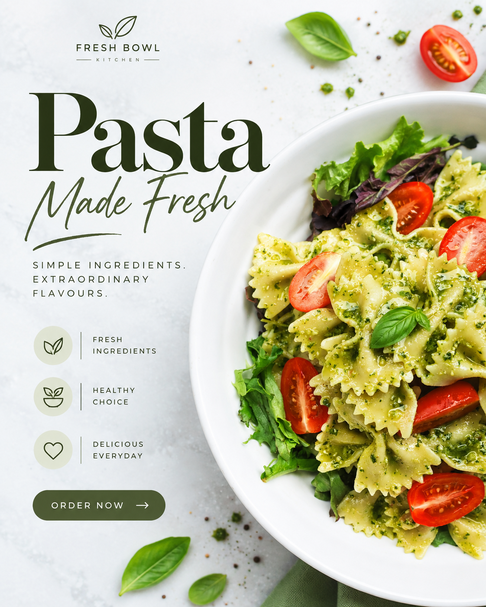

Digital design · Visual storytelling
Design that feels clear and memorable.
I create thoughtful visual communication and digital experiences — from campaign artwork and social media creatives to responsive web layouts and user-focused interface concepts.
.png)
.png)
Good design, with purpose.Clear hierarchy. Intentional colour. A strong visual idea.
A few selected concepts
Visual design work
A selection of campaign-style graphics exploring composition, typography, colour and product storytelling. Concept and self-initiated pieces are identified as such.


Digital product & web
From the first idea to a usable interface.
For UI/UX and web design roles, highlight the specific methods and tools you have used. Add real case-study links here when ready; the sections below describe areas of practice rather than claiming completed client projects.
Product & UX thinking
Clarify user needs, organise information, map key journeys and plan wireframes around the intended task.
UI & responsive web
Build clear visual hierarchy, reusable interface patterns and layouts that adapt to different screen sizes.
Prototype & delivery
Use feedback to refine flows and interface details, then prepare designs and handoff notes for implementation.
FigmaWireframesPrototypingResponsive DesignDesign SystemsVisual HierarchyHTML & CSSSocial Media Creatives
A little about me
Curious by nature.
Intentional by design.
I’m a digital and visual designer who enjoys turning ideas into clear, considered experiences. I care about the details — the way content is organised, how colour guides attention, and how a design works across different screens.
My approach: understand the goal, simplify the message, create a clear visual direction, and refine the details. I value thoughtful collaboration, consistency and design that serves a real purpose.
01. DiscoverGoals, audience and context
02. StructureContent and key journeys
03. DesignLayout, type and visuals
04. RefineReview and improve
Contact & opportunities
Let’s make something useful.
Open to discussing suitable opportunities in UI/UX design, web design and visual communication. Update the contact details below before sharing this portfolio.